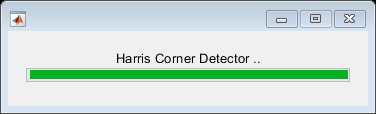

function myHarrisCornerDetector()
IMG1=load('..\data\boat.mat');
OrigImage = IMG1.imageOrig;
bar = waitbar(0,'Harris Corner Detector ..');
path = '../Images/';
filename = strcat([path 'OrigImage.png']);
imwrite(mat2gray(OrigImage), filename);
import mlreportgen.report.*
R = Report('HarrisCornerDetector', 'pdf');
open(R);
add(R, " APPROACH ");
add(R, "The input image is firstly smoothened using a Gaussian Filter (SD = 1). Its directional derivative along the two axes is then taken using Sobel Operator where the mask is convoluted with the image matrix. The Gaussian weights (SD = 2) are then added and elements of second derivative matrix are computed. Now for each patch, the structure tensor matrix is computed by adding the corresponding elements of derivatives computed before. The two eigen values for each tensor matrix are found and eigen matrices with respective eigen values at the pixel coordinates where the patch was made is constructed. The response matrix is constructed by taking the difference between the determinant and scaled trace's square of the tensor (k = 0.05). With Non-maximum suppression being performed on the resultant response matrix, results in the required Corner-Measure output. ");
close(R);
InputImage = OrigImage;
n=3;
max_intensity = max(max(InputImage));
min_intensity = min(min(InputImage));
InputImage = InputImage - min_intensity;
InputImage = InputImage./(max_intensity - min_intensity);
sigma_1 = 1;
fprintf('SD for gaussian smoothing of Input Image: %d\n', sigma_1);
g_1 = fspecial('gaussian',[n n], sigma_1);
InputImage = imfilter(InputImage, g_1, 'same');
u = [1 0 -1]';
v = [1 2 1];
Grad_y = conv2(u,v,InputImage);
Grad_x = conv2(v,u,InputImage);
filename = strcat([path 'X_derivative_Image.png']);
imwrite(mat2gray(Grad_x), filename);
figure, imshow(mat2gray(Grad_x));
title('X derivative Image');
filename = strcat([path 'Y_derivative_Image.png']);
imwrite(mat2gray(Grad_y), filename);
figure, imshow(mat2gray(Grad_y));
title('Y derivative Image');
sigma_2 = 2;
fprintf('SD for gaussian weightning of Image derivates: %d\n', sigma_2);
g_2 = fspecial('gaussian',[n n], sigma_2);
Ix_2 = imfilter(Grad_x.^2, g_2, 'same');
Iy_2 = imfilter(Grad_y.^2, g_2, 'same');
IxIy = imfilter(Grad_x.*Grad_y, g_2, 'same');
Eigen_1 = zeros(size(Ix_2));
Eigen_2 = Eigen_1;
R = Eigen_1;
corner_measure = R;
k=0.05;
fprintf('Constant for corner-ness measure: %d\n', k);
for ii = 1:1:size(Ix_2,1)
for jj = 1:1:size(Ix_2,2)
sum_Ix_2 = sum(sum(Ix_2(ii - min(ii-1,((n-1)/2)): ii + min(size(Ix_2,1)-ii, ((n-1)/2)), jj - min(jj-1,((n-1)/2)): jj + min(size(Ix_2,2)-jj, ((n-1)/2)))));
sum_Iy_2 = sum(sum(Iy_2(ii - min(ii-1,((n-1)/2)): ii + min(size(Ix_2,1)-ii, ((n-1)/2)), jj - min(jj-1,((n-1)/2)): jj + min(size(Ix_2,2)-jj, ((n-1)/2)))));
sum_IxIy = sum(sum(IxIy(ii - min(ii-1,((n-1)/2)): ii + min(size(Ix_2,1)-ii, ((n-1)/2)), jj - min(jj-1,((n-1)/2)): jj + min(size(Ix_2,2)-jj, ((n-1)/2)))));
A = [sum_Ix_2, sum_IxIy; sum_IxIy, sum_Iy_2];
eigen = eig(A);
Eigen_1(ii,jj) = min(eigen);
Eigen_2(ii,jj) = max(eigen);
R(ii,jj) = Eigen_1(ii,jj)*Eigen_2(ii,jj) - k*(Eigen_1(ii,jj) + Eigen_2(ii,jj))^2;
if (R(ii,jj) > 2)
corner_measure(ii,jj) = 255;
end
end
end
filename = strcat([path 'Eigen_Image_1.png']);
imwrite(mat2gray(Eigen_1), filename);
figure, imshow(mat2gray(Eigen_1)), colorbar;
title('Eigen Image 1');
filename = strcat([path 'Eigen_Image_2.png']);
imwrite(mat2gray(Eigen_2), filename);
figure, imshow(mat2gray(Eigen_2)), colorbar;
title('Eigen Image 2');
filename = strcat([path 'Corner_Measure_Image.png']);
imwrite(mat2gray(corner_measure), filename);
figure, imshow(mat2gray(corner_measure)), colorbar;
title('Corner Measure Image');
figure, imshow(mat2gray(OrigImage));
title('Original Image');
waitbar(ii/size(Ix_2,1), bar);
end
SD for gaussian smoothing of Input Image: 1
SD for gaussian weightning of Image derivates: 2
Constant for corner-ness measure: 5.000000e-02
